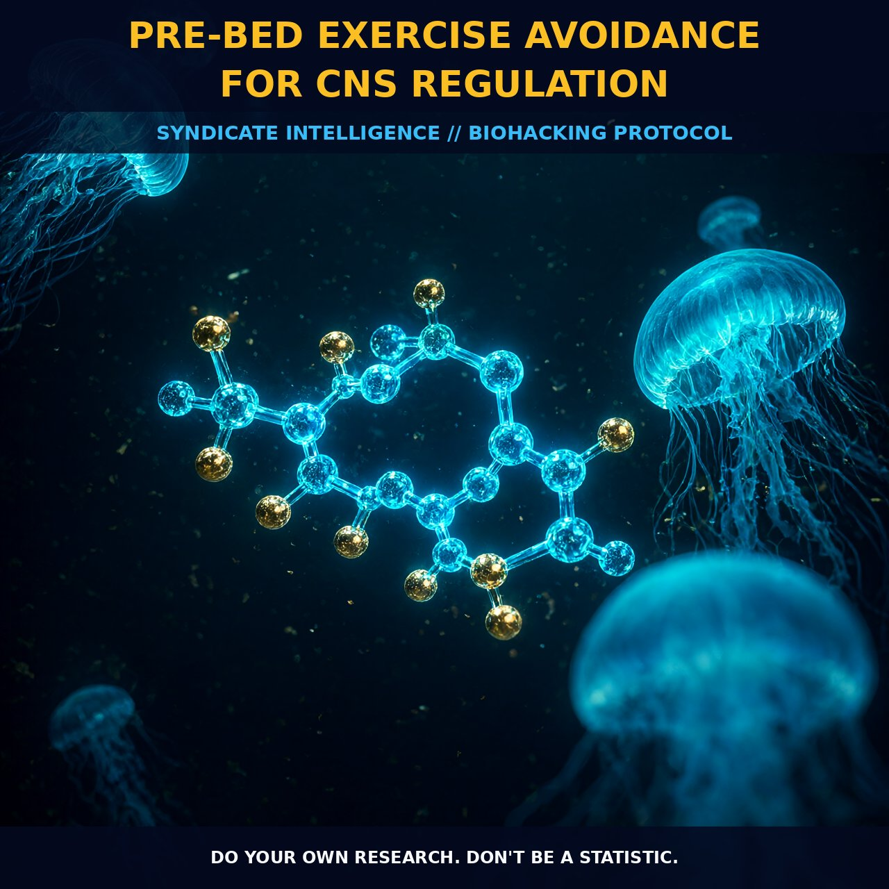

CNS Regulation via Pre-Bed Exercise Avoidance

1. The Mechanism
The central nervous system operates on a delicate equilibrium between sympathetic arousal and parasympathetic recovery, a state frequently disrupted by late-day physical exertion. While moderate activity promotes cerebral circulation and neurogenesis via increased blood flow to the hippocampus and orbitofrontal cortex, intense or poorly timed exercise keeps the autonomic nervous system in a heightened alert state. The release of endogenous cannabinoids such as anandamide and opioids like beta-endorphin contributes to the pleasurable runner’s high, but these neurochemical cascades require time to downregulate before sleep onset.
When physical activity extends too close to bedtime, the body remains locked in this elevated metabolic and neural processing mode, preventing the necessary transition into deep restorative sleep cycles. Furthermore, the production of growth factors and neuroprotective substances during resistance training helps brain cells grow, maintain, and mend. Yet, this anabolic signaling is part of a broader systemic response that elevates core temperature and alertness.
Stress management techniques like controlled breathing help reduce brain stress by shifting the balance toward the relaxation response, but these effects can be overridden by recent muscular engagement. The lack of bodily exercise in modern sedentary life leads to an inability to deal with mental challenges, meaning we must be selective about when we introduce that physical stimulus.
Evening exercise avoidance allows the neural networks strengthened during the day to consolidate without competing with the immediate physiological demand for cooling and rest. By treating exercise as a targeted intervention rather than a constant state of activity, you preserve the natural drive to move while ensuring that your internal environment is primed for deep, restorative neural processing.
2. Biological Leverage
Engaging in aerobic exercises such as running, cycling, and swimming significantly boosts blood flow and stimulates neurogenesis, forming new brain cells critical for long-term cognitive flexibility. However, the timing of these activities determines whether they serve as a tool for plasticity or a barrier to recovery. Resistance training augments the elevation of circulating brain-derived neurotrophic factor (BDNF), supporting neuroplasticity and enhancing episodic memory performance, but this process is tied to the acute phase of muscle recovery and energy expenditure.
By avoiding exercise in the pre-bed window, we allow these molecular signals to peak and then settle, ensuring that the neural connections formed during the day are not interrupted by new physiological demands. The integration of strength and cardiovascular training improves brainpower, attention, and clarity by modulating mood-regulating neurotransmitters including noradrenaline, dopamine, and serotonin.
These substances improve memory and brain connections, creating a stable baseline for cognitive function. When we align our physical efforts with our circadian rhythm, we maximize the benefits of gray matter increases in memory-critical areas while minimizing the risk of over-arousal. This biological leverage turns exercise from a simple caloric burn into a precise hormonal and neural signaling event, optimizing the body's capacity to adapt and build new neural connections overnight.
3. Tactical Implementation
For those looking to optimize their CNS regulation, focus on completing intense resistance exercise or high-intensity aerobic sessions at least three hours before bed. This window allows for the clearance of excess catecholamines and the return of core body temperature to levels conducive to sleep onset. Incorporate gentle movement or low-intensity walking earlier in the evening if needed, as these activities boost brain health without significantly elevating alertness or disrupting the relaxation response.
Monitoring your personal response is key, as individual variability in exercise tolerance and metabolic rate can influence the ideal cutoff time for daily physical activity. Consider supplementing or integrating practices that support the relaxation response during the pre-bed window to further stabilize the nervous system. Techniques such as diaphragmatic breathing or bodywide muscular tension and relaxation help reduce physical discomfort and distractions, promoting tranquility and mental focus.
4. Prostar Life Hack
Set a 'Metabolic Curfew' three hours before your target sleep time. Complete all high-intensity resistance or cardio work by this cutoff to allow core temperature and catecholamines to settle, ensuring your neural networks consolidate for cognitive enhancement rather than fighting for resources against active muscle recovery.
Prostar Life Hack
Set a 'Metabolic Curfew' three hours before your target sleep time. Complete all high-intensity resistance or cardio work by this cutoff to allow core temperature and catecholamines to settle, ensuring your neural networks consolidate for cognitive enhancement rather than fighting for resources against active muscle recovery.
[ AUTHOR: LEAD TECHNICAL RESEARCHER ]